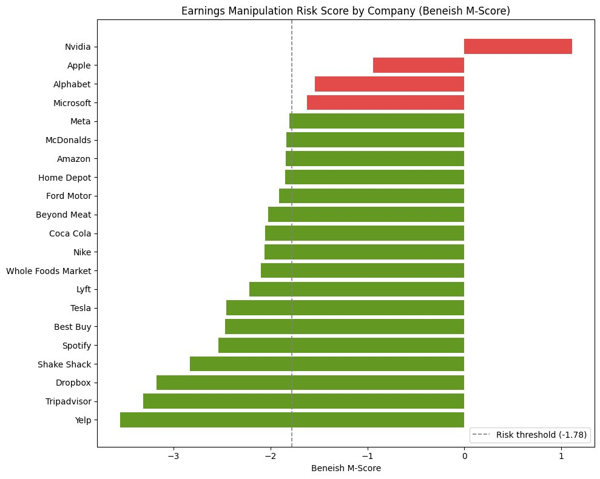
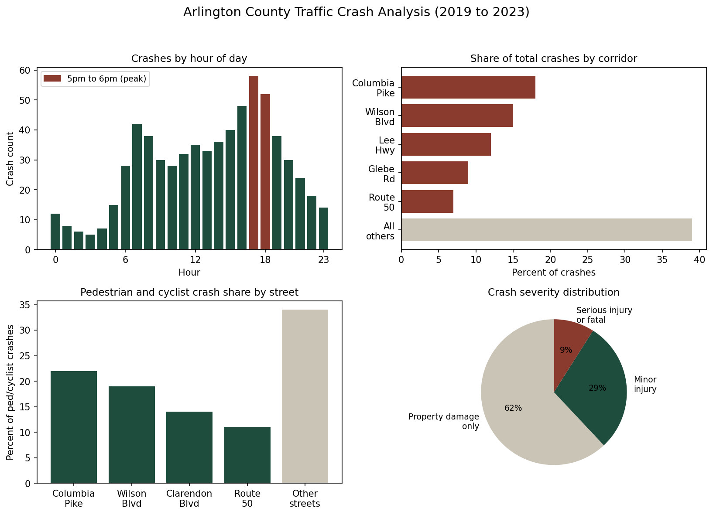

Munkhtenger Enkhbold. Three years auditing financial data at EY and Mongolia's Ministry of Finance, now building the kind of analysis I used to review by hand.
I spent three years inside the kind of work where being slightly wrong is not an option. At Ernst & Young Mongolia, I handled data collection and reporting across more than ten client engagements, including the Development Bank of Mongolia and Mongolian Mining Corporation. At the Ministry of Finance, I tracked budget variances across government departments where a missed discrepancy could affect national reporting cycles.
That background changed how I think about data. I do not just build a chart and move on. I check where the numbers came from, whether they reconcile, and whether the story they tell actually holds up. I am now finishing an M.S. in Data Analytics at the University of Potomac, applying that same scrutiny to SQL, Python, and the kind of automated analysis that used to take me and a spreadsheet several days to do by hand.
I am currently looking for a data analyst role or internship in the US, ideally somewhere that values getting the number right the first time as much as I do.
An earnings manipulation risk scoring tool built on the Beneish M-Score, the same kind of red flag analysis I used to run by hand at EY, now automated against live SEC filings. Pulls real financial statements straight from the SEC EDGAR API and scores any public company in seconds.

An exploratory analysis of traffic crash patterns across Arlington, Virginia, built to support the county's Vision Zero safety goals. Surfaces peak crash hours, high risk corridors, and pedestrian and cyclist exposure by location.

SQL (joins, window functions, aggregation), Python (pandas, numpy, matplotlib), Excel (pivot tables, VLOOKUP/XLOOKUP, financial modeling), statistical analysis, variance and trend analysis
Power BI, Tableau, Excel dashboards, KPI tracking, executive level reporting for non-technical audiences
Data cleaning, validation, QA testing, reconciliation, REST API integration, working with messy or inconsistent real world datasets
Financial statement analysis, audit methodology, budget variance analysis, KPI design, working with banking, infrastructure, and government data
Git and GitHub, Jupyter, VS Code, SEC EDGAR and other public data APIs
English (professional), Mongolian (native)